| 日付 | 2012年4月8日（日） |
|---|---|
| 山域 | 安蘇山塊 |
| メンバー | 家族（妻、長女・1歳） |
| 山行形態 | 子連れ日帰り |
| アクセス | 車 |
| ルート (Map) | 大中寺駐車場→下皆川登山口→太平山→晃石山→桜峠→馬不入山往復→大中寺駐車場 カタクリの里→三毳山往復 |
カタクリの花が咲く季節になったので、カタクリで有名な三毳山に行ってみることにする。
それだけでは物足りないので、近くにある太平山～晃石山と合わせて登る予定だ。
安蘇山塊に属する山で、いずれも小さな山である。
7:40 大中寺駐車場到着。標高80m。
朝早くから、登山者の姿や自転車ライダーの姿が見られる。
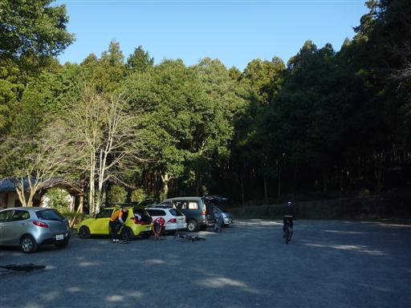
大中寺駐車場から直接晃石山に登る道もあるのだが、
今回は下皆川登山口から太平山経由で登ることにする。
登山口までは車道に沿って、中山丘陵の裾にある遊歩道を歩いていく。
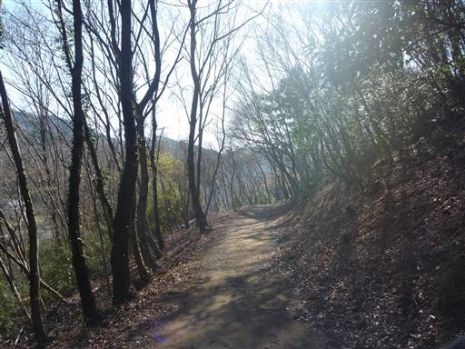
桜が咲いている。ソメイヨシノではないようだ。
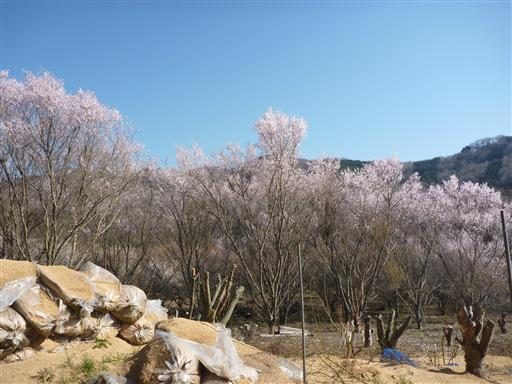
これから歩く予定の丘陵地帯が目の前に広がっている。
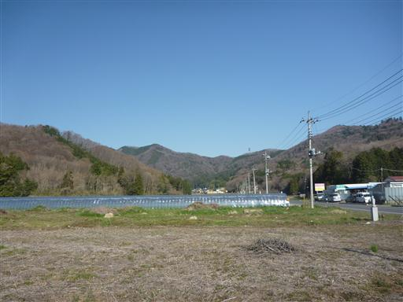
下皆川登山口に到着。ここから登山道が始まる。
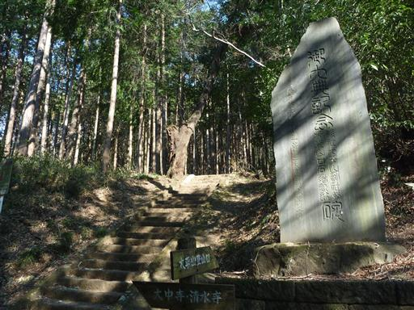
最初は石段を登っていく。
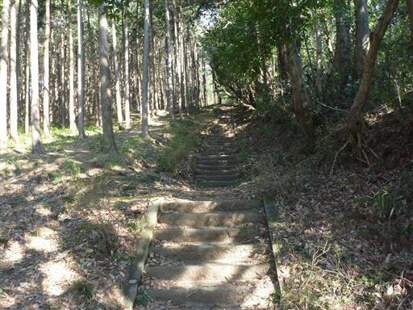
しばらく登ると車道を横切る。よく整備された大きな道路だ。
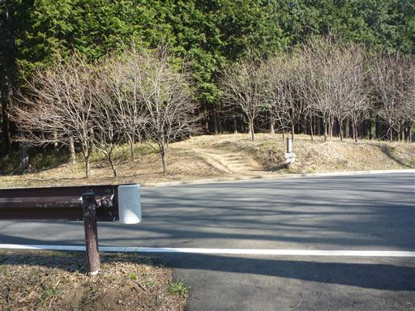
車道を過ぎると明るく開けた尾根道になる。今日は暖かくて絶好のハイキング日和だ。
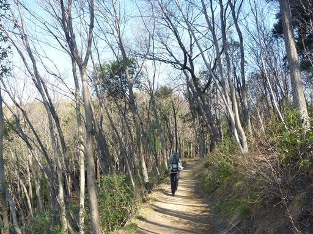
再び車道と合流する。ここからは車道を登っていく。
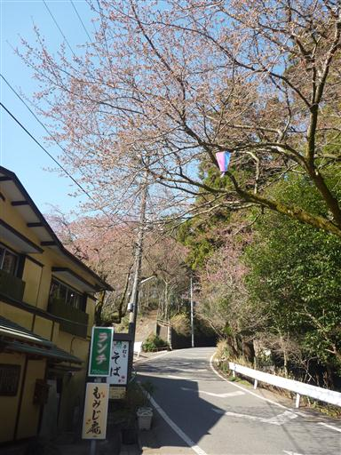
謙信平に到着。上杉謙信が騎馬隊の訓練をした場所で、
ここから望んだ関東平野の広さに感嘆したと伝えられている。
霧が出ると丘陵地帯が島のように見えることから、ここは「陸の松島」とも言われている。
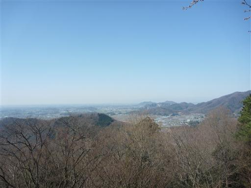
この辺りは観光地で土産物屋が軒を連ねている。
時間が早いのでまだ閑散としているが、昼時になると賑わうのだろう。
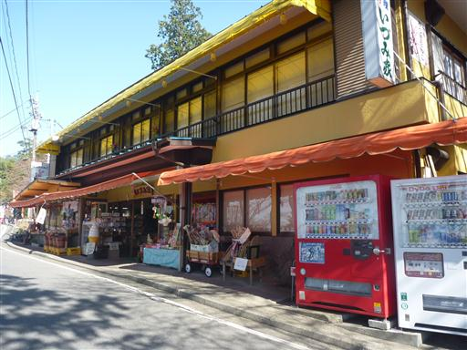
謙信平の一角にある山本有三の石碑。「路傍の石」の一節が刻まれている。
山本有三は栃木県出身の文学者だ。
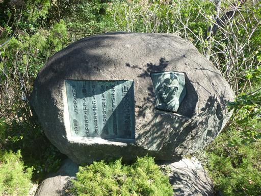
車道を離れ、大平神社に続く参道を登る。
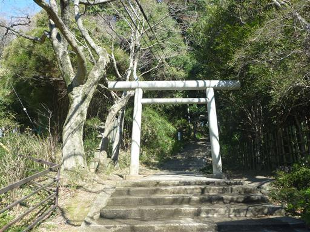
古びた灯篭が立っている。少しずれていて、上部が転げ落ちそうだ。
反対側の灯篭は上部がなくなっている。
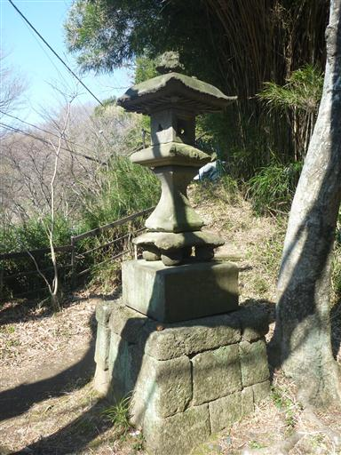
大平山神社に到着。827年に慈覚大師により創建されたと伝えられる古い神社だ。
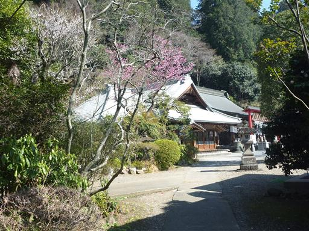
立派な本殿が建っている。
神社近くまで車で来ることができるため、辺りに観光客や登山者の数は多い。
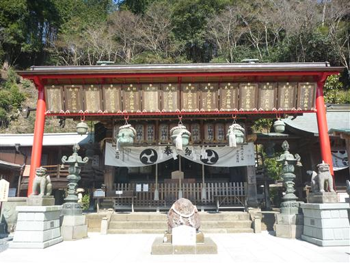
神社横にある登山道から太平山山頂を目指す。
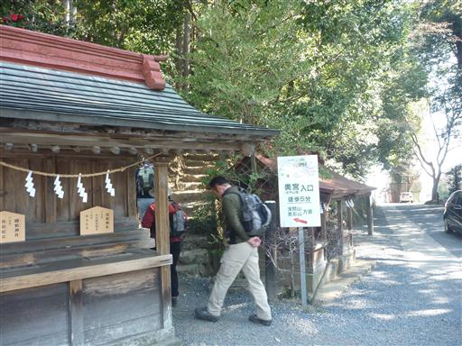
途中、中高年団体ハイカーに追いつく。
太平山まですぐのはずなのだが、とにかく歩く速度が遅くなかなか前に進まない。
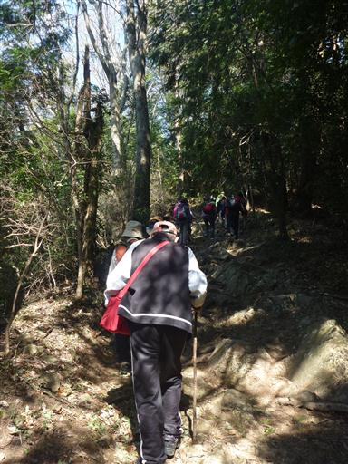
9:11 太平山山頂到着。標高341m。
山頂には富士浅間神社が建っている。
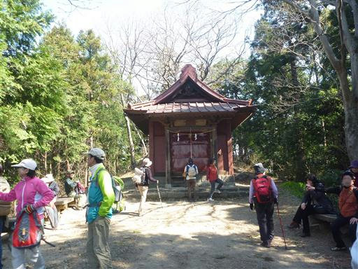
神社の奥の少し高くなったところに太平山の山頂標識がある。
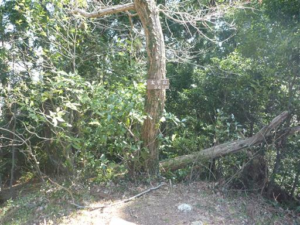
団体ハイカーが占拠する太平山をさっさと離れ、晃石山に向かって歩き始める。
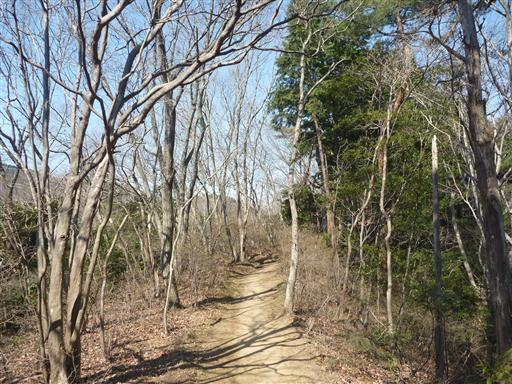
電波塔が見えてきたところで車道を横切る。車道の多い山だ…
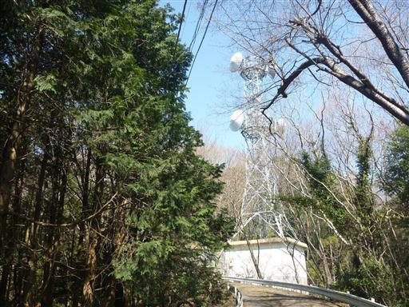
ハンググライダー離陸場。目の前には田園風景が広がる。
飛んでいる人は見当たらない。
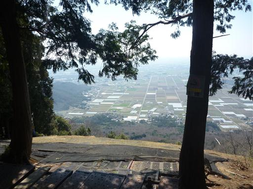
9:45 晃石山山頂到着。標高419m。
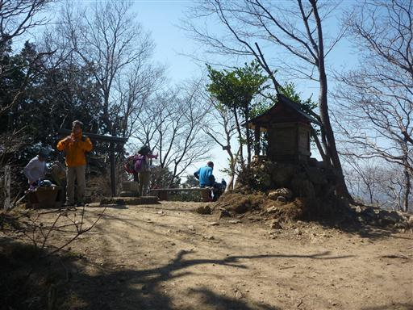
この山頂には通常より一回り大きな一等三角点が埋まっている。
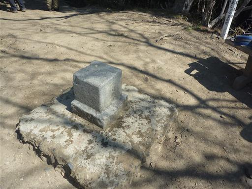
山頂は樹木に覆われていてあまり展望は開けないが、
木々の隙間からいくらかの展望が得られる。
北方には安蘇山塊の山々、遠くに男体山など日光の山々が見える。
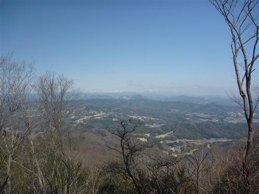
南西方向には関東平野に消えていく丘陵地帯の尾根が見えている。
右手に見えるのは丘陵地帯の末端にある三毳山だ。
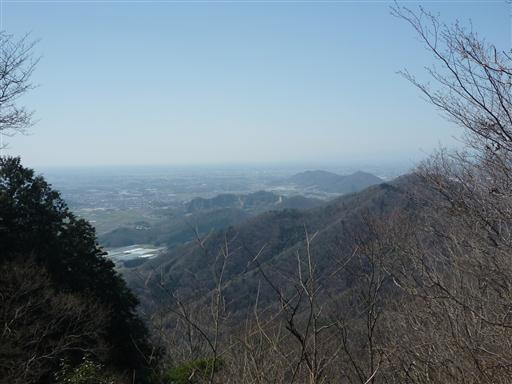
晃石山で小休止をとった後、桜峠を目指して歩いていく。
笹と雑木林が美しい尾根道だ。歩いている登山者の数は多い。
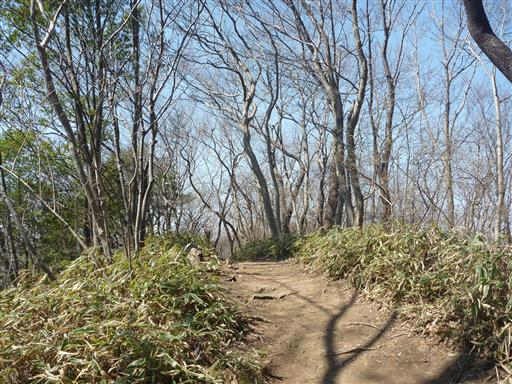
桜峠に続く急な坂道を下って行く。大きな木が倒れて登山道の真中にある手すりが破壊されている。
整備している人に話を聞くと、先日の爆弾低気圧で倒れたそうだ。
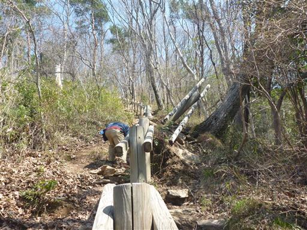
桜峠に到着。峠には東屋が建っている。
昼食にはまだ早いので馬不入山を往復することにする。
ガイドブックによると展望の良い山らしい。
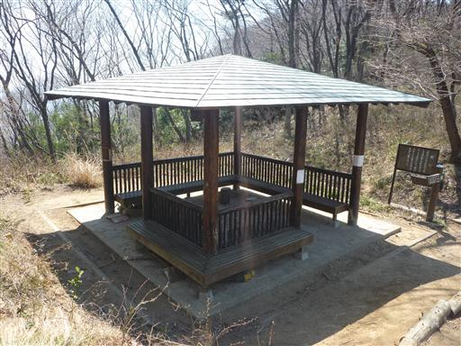
この辺り一帯は照葉樹林帯だ。日に照らされて葉が光っている。
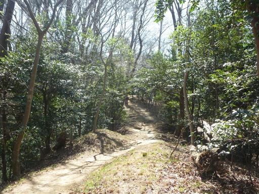
11:13 馬不入山山頂到着。標高345m。
この山でも山頂直下で超鈍足中高年団体登山者に追いついてしまった。
山頂は団体登山者に占拠される。展望も特段良いわけではない。
さっさと桜峠に引き返すことにする。
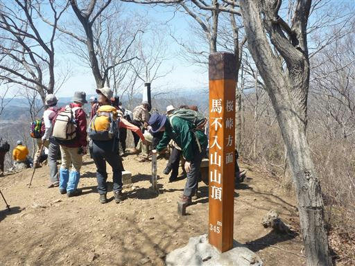
桜峠に戻ってくる。ここで休憩している登山者も多い。
天気が良いので、皆東屋には入らず外で休憩している。
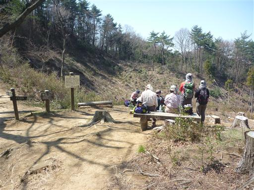
この峠からの展望は素晴らしい。安蘇山塊の低い山々が広がる。
遠くに見える白い山は赤城山だ。ここで昼食をとることにする。
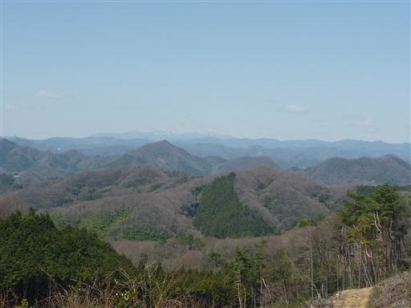
桜峠から下山する。この道もよく整備されていて歩きやすい。
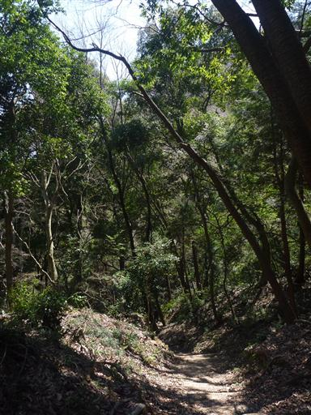
下山。花が咲き春らしい風景が広がっている。
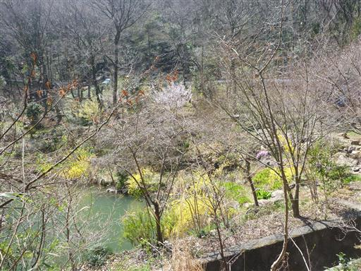
清水寺に立ち寄る。「せいすいじ」と読む。
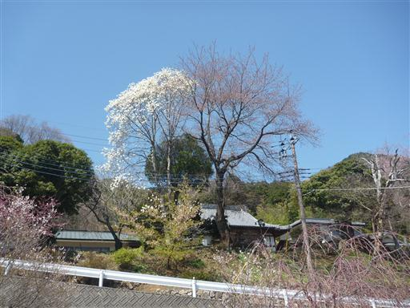
桜の木が植わっている。まだほとんど咲いていないが、開花直前という感じだ。

ここから大中寺まで車道が続いているが、遊歩道が整備されているため、そちらを歩くことにする。
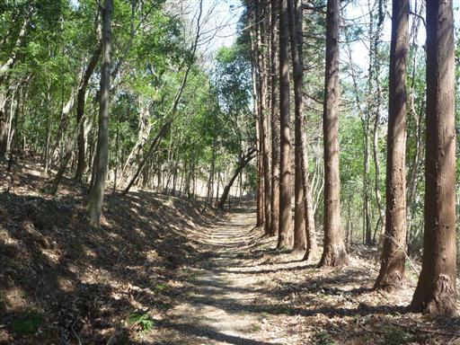
樹林帯に竹が混ざって生えている。生存競争に勝つのはどちらだろうか？
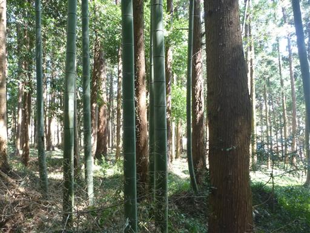
民家の間をぬって続く細い道を歩いていく。
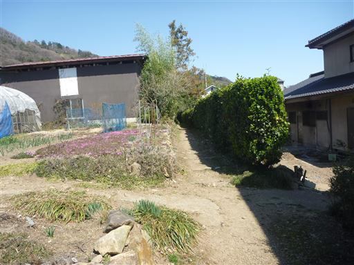
13:09 大中寺の駐車場に戻ってくる。
せっかくなので大中寺にも立ち寄ることにする。
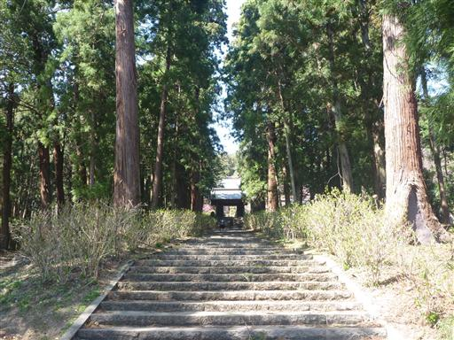
ここは、江戸時代には関東を代表する曹洞宗の寺院だった。
大きな駐車場が用意されているだけあって、多くの観光客が訪れている。
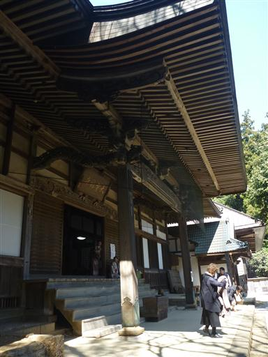
本殿の前には何の木か分からないが、ねじれた大木が立っている。
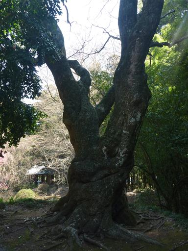
晃石山下山後、三毳山に向かう。
13:49 カタクリの里駐車場到着。標高25m。
駐車場代として500円をとられた。それでも駐車場はいっぱいだ。
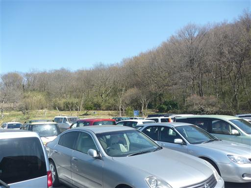
観光客に交じって三毳山を目指す。
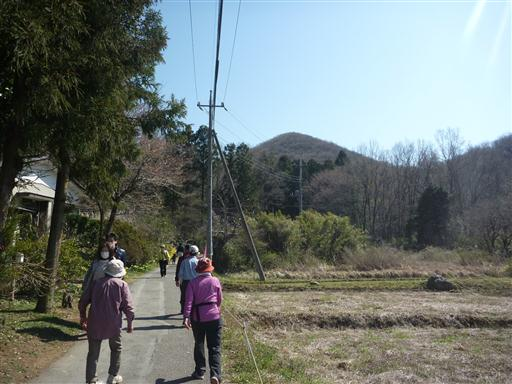
三毳山の斜面に到着すると、すぐにカタクリの群落が広がっている。
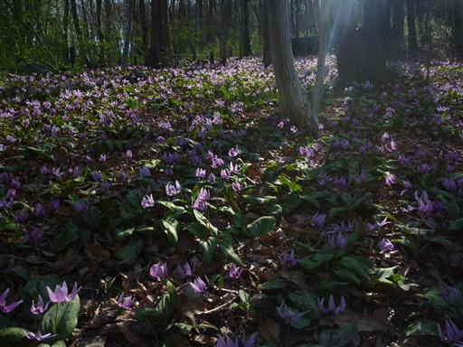
遊歩道が整備されていて、両側はカタクリの群落で埋め尽くされている。
花畑に踏み入らないようにロープで保護されている。
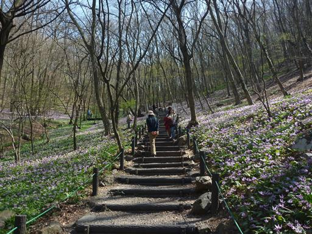
間近から見るカタクリの花。どの花も下を向いて咲いている。
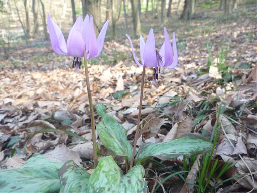
カタクリに混ざってアズマイチゲの花もところどころに咲いている。
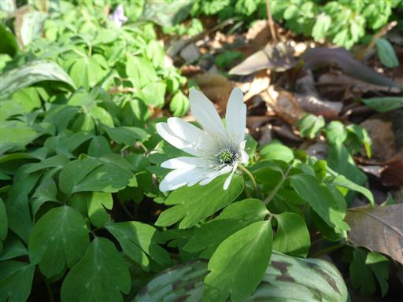
カタクリの群落を過ぎると、普通の登山道となる。
観光客はここまで来ないので、この辺りは比較的静かだ。
低い山なのだが、2山目となると足が上がらない。
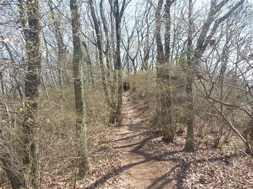
14:24 三毳山山頂到着。標高229m。
三毳山はいくつかのピークがあるが、ここが最高峰だ。
山頂からは意外と展望が広がるが、電線が邪魔だ。
南に縦走路が続いているが、もと来た道を引き返すことにする。
再びカタクリの里を見ながら下山する。
辺りの木々は新芽を出している。新緑の季節までもうすぐだ。
15:14 カタクリの里駐車場到着。
暖かい日差しに包まれたのんびりハイキングだった。